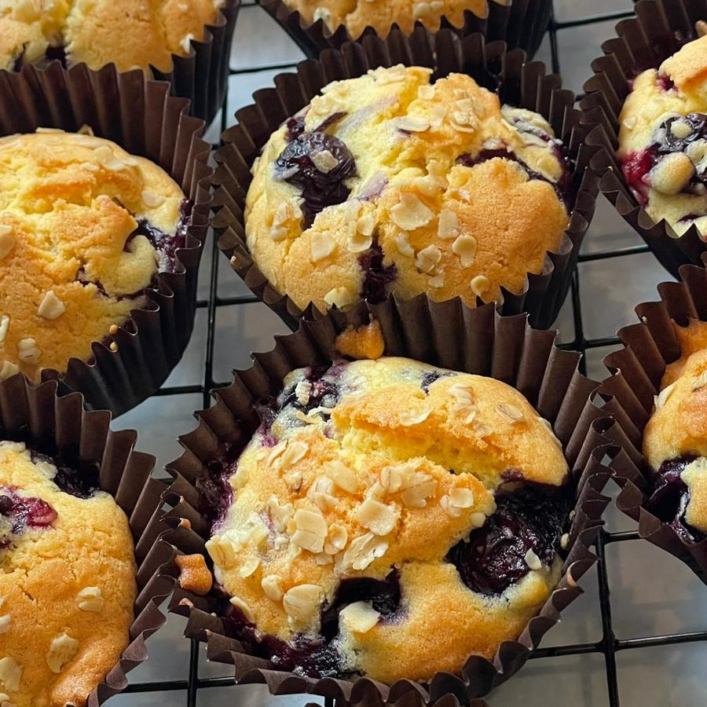

Blueberry Muffins

- Prep time:
- Cook time:
- Servings: 12
Great to prep for a quick morning breakfast to fuel your day!
Ingredients:
- 2 eggs
- 250g self rasing flour
- 120ml milk
- 100g caster sugar
- 150g butter
- 1 small punnet of blueberries
Method:
- Preheat the oven to 180 degrees C.
- Mix the butter and caster sugar together until they form a light creamy paste.
- Add the eggs and beat with a whisk until the mixture is light and fluffy.
- Gently fold in the flour using a wooden spoon.
- Finally fold in the blueberries.
- Add the milk as required to keep the mixture moist.
- Set the paper cases into the mould or grease well with a liittle extra oil or butter.
- Place the muffins in the oven for 20 minutes.
- Rest the muffin tray on a wire rack for 5 minutes.
- Then remove the muffins and leave on the rack for another 5 minutes before serving